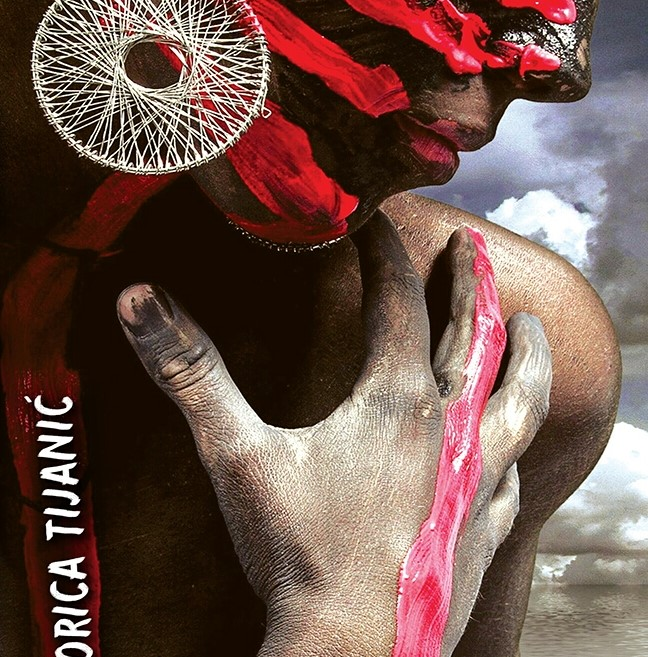

Izdvojene aktivnosti
SVE AKTIVNOSTI
Promocija romana Zorice Tijanić
Novi roman književnice i novinarke Zorice Tijanić, esejistikinje, putopisca, književne kritičarke, kolumnistkinje i urednice više knjiga poezije.
Govore :
Viktor Radun, Milena Letić i Zorica Tijanić

17.Septembar 2019.
Čitaonica Gradske biblioteke u Novom
UTORAK
17.Septembar 2019.
Čitaonica Gradske biblioteke u Novom
Sadu, Dunavska 1
Kako da .. ?
- Kako da postanem član Gradske biblioteke?
- Kako da poklonim knjigu Gradskoj biblioteci?
- Kako da pretrazim elektronski katalog
- Kako da pronađem literaturu za izradu seminarskog/m,aturskog/diplomskog rada?
- Kako da rezervišem određeni naslov?
- Kako da pozajmim knjigub a nisam u mogućnosti da dođem do biblioteke?
- Šta da uradim ukoliko izgubim važeću člansku kartu?
- Kako da pronađem literaturu za izradu seminarskog/m,aturskog/diplomskog rada?